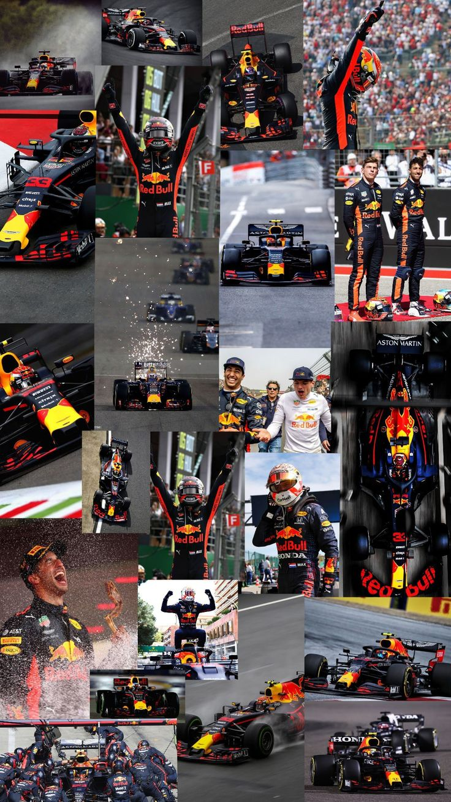
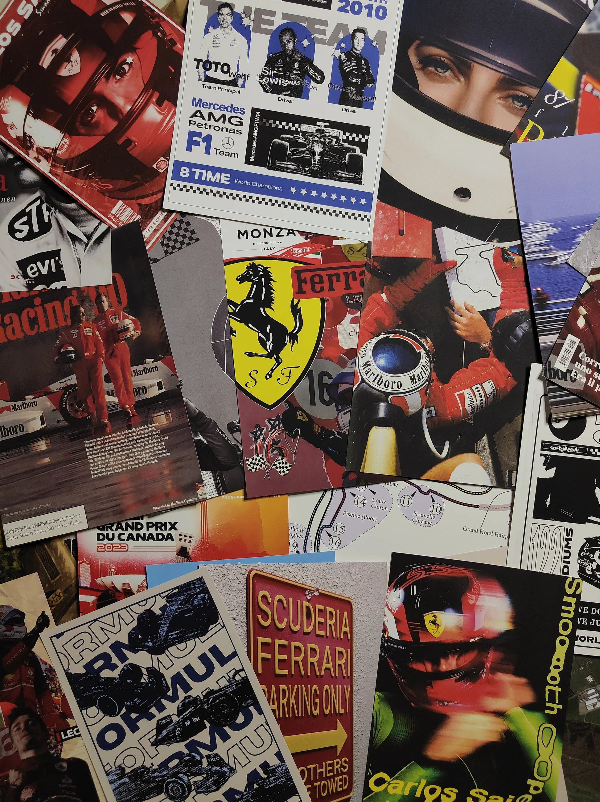
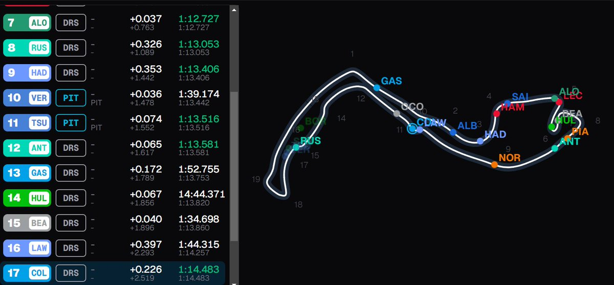

La Fórmula 1 es mucho más que un deporte para mí: es una pasión que combina estrategia, precisión y adrenalina pura. Desde adelantamientos imposibles hasta batallas históricas por el campeonato, cada carrera transmite una emoción incomparable. Como verdadero aficionado al automovilismo, dedico entre 6 y 8 horas semanales a estudiar su aerodinámica, analizar trazadas de carrera y comprender las estrategias que marcan la diferencia entre la victoria y la derrota, viviendo cada fin de semana de competición con la misma intensidad que en la pista.



Analizo trazadas y curvas, estudiando cómo el viento influye directamente en la aerodinámica del monoplaza. Observo cómo el flujo de aire recorre el alerón delantero, el suelo y el difusor para generar carga aerodinámica, permitiendo mayor estabilidad y velocidad en curva. A través de ejemplos vistos en túneles de viento, comprendo cómo pequeñas variaciones en el diseño o en la dirección del viento pueden alterar el equilibrio del auto y su rendimiento en pista.
Me apasionan los adelantamientos, especialmente aquellos que exigen precisión y valentía, las carreras bajo lluvia donde el talento del piloto marca la diferencia y las estrategias llevadas al límite, en las que una decisión correcta en el momento exacto puede cambiar por completo el resultado de una carrera.
Mi piloto favorito es Max Verstappen, pero soy tifosi: Ferrari es mi escudería favorita.
Mis circuitos favoritos son Monza y Spa-Francorchamps.
Gracias por leer